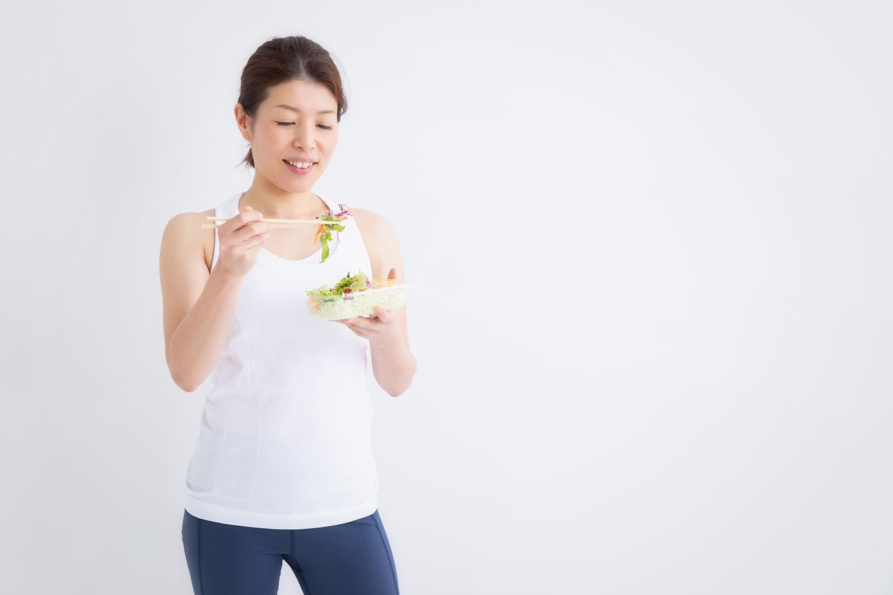

筋肉をつけるのに必要な「たんぱく質の量」は？49件の研究データで確認した本当の目安

「たんぱく質はとればとるほど良い」は本当？
「筋肉をつけたいので、プロテインをたくさん摂っています」という会員様は多くいらっしゃいます。たんぱく質が筋肉の材料になることは事実ですが、「摂れば摂るほど筋肉が増える」というのは本当なのでしょうか。今回は、たんぱく質の摂取量と筋肉量の関係を調べた大規模なメタ分析と、1回の食事でどれくらい摂るのが効果的かを調べた研究をもとに、本当に必要な量を確認してみました。
49件・1863人分のデータが示す「1.6g/kg/日」という目安
2018年に『British Journal of Sports Medicine』誌に掲載されたメタ分析(Morton et al., 2018)では、レジスタンストレーニング(筋トレ)を行っている成人を対象とした49件の研究、合計1863名分のデータがまとめて分析されています。その結果、たんぱく質の摂取量を増やすほど、ある地点までは筋肉量(除脂肪体重)の増加量も大きくなる一方、その効果は体重1kgあたり約1.6g/日で頭打ちになり、それ以上摂取量を増やしても筋肉量の増加に上乗せの効果は見られにくいことが、メタ回帰分析によって示されています。つまり、体重60kgの方であれば1日あたり約96g、70kgの方であれば約112gが、筋肥大という観点では一つの目安になるということです。もちろん個人差はありますが、「多ければ多いほど良い」というよりは、「ある程度の量を超えると効果が頭打ちになる」と捉えておくのが実態に近いようです。
1回の食事で摂れる量にも限りがある
では、1日の目標量を一度にまとめて摂ればよいのでしょうか。2018年に『Journal of the International Society of Sports Nutrition』誌に掲載された研究(Schoenfeld & Aragon, 2018)では、1回の食事でどれくらいのたんぱく質が筋肉づくりに使われるかについて、これまでの研究がまとめられています。それによると、厳密な「1食あたりの上限」が明確に示されているわけではないものの、1日に必要な量を2〜3食に分けて摂るよりも、1食あたり体重1kgあたり約0.4gを目安に、4食以上に分けて摂る方が、1日を通した筋肉づくりの効率という点では理にかなっていると報告されています。先ほどの1日1.6〜2.2g/kgという目安を4食に分けると、1食あたりはおよそ0.4〜0.55g/kgとなり、ちょうどこの研究が示す範囲に近い数字になります。一度に大量のプロテインを飲むよりも、3〜4回の食事にバランスよく分けて摂る方が、無理なく目安量に到達しやすいといえそうです。
三日坊主さん専門ジムが考える、たんぱく質との付き合い方
ここまでの研究をまとめると、①筋肥大の効果は体重1kgあたり約1.6g/日あたりで頭打ちになりやすいこと、②1日の必要量は1食に詰め込むより、3〜4回の食事に分けて摂る方が効率的と考えられること、の2点が分かります。とはいえ、いきなり体重1kgあたり1.6gを目指そうとすると、多くの方にとってハードルが高く感じられるはずです。そこでE.Sでは、まず「体重と同じ数字のグラム数」を最初の目標にすることをおすすめしています。たとえば体重60kgの方なら、まずは1日60gのたんぱく質を安定して摂れるようになることが第一段階です。これが習慣として定着してきたら、次のステップとして体重1kgあたり1.6g(60kgの方なら96g)を目指していく、という段階的な進め方が、無理なく続けやすいと考えています。プロテインドリンクはあくまで補助的な手段であり、無理に多量のサプリメントに頼らなくても、日々の食事を少し見直すだけで目安量に近づけるケースは多くあります。
まとめ：まずは「体重と同じグラム数」、慣れてきたら「体重1kgあたり1.6g」へ
結論として、筋肉をつけるために必要なたんぱく質の量は、際限なく多ければ良いわけではなく、体重1kgあたり1.6g/日あたりが一つの目安になりそうです。ただし、最初からその量を目指す必要はありません。まずは「体重と同じ数字のグラム数」を目標にし、それが安定して摂れるようになってきたら、1.6g/kgを目指して少しずつ増やしていく。そのくらいのペースで十分です。そしてその量は、1食にまとめるよりも3〜4回の食事に分けて摂る方が、無理なく、かつ効率よく目標に近づけます。「今日はたんぱく質が足りているか」を毎食ごとに少し意識してみることから、始めてみてはいかがでしょうか。
出典・参考文献
- Morton RW, Murphy KT, McKellar SR, Schoenfeld BJ, Henselmans M, Helms ER, Aragon AA, Devries MC, Banfield L, Krieger JW, Phillips SM. (2018) "A systematic review, meta-analysis and meta-regression of the effect of protein supplementation on resistance training-induced gains in muscle mass and strength in healthy adults." British Journal of Sports Medicine, 52(6), 376-384.
- Schoenfeld BJ, Aragon AA. (2018) "How much protein can the body use in a single meal for muscle-building? Implications for daily protein distribution." Journal of the International Society of Sports Nutrition, 15:10.

実は自分自身も継続が苦手で、何度も挫折した経験があります。だからこそ「続けることの難しさ」がよくわかります。無理のない習慣化を一緒に目指しましょう。